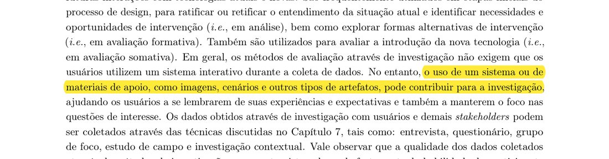
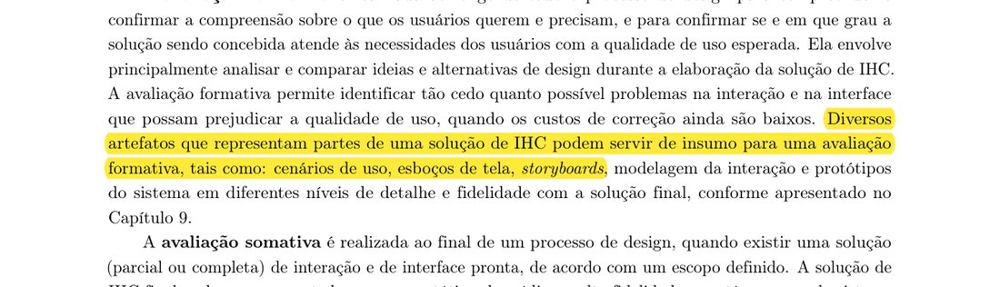
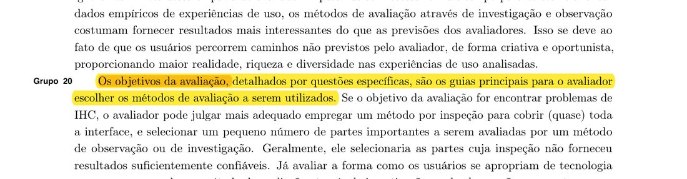
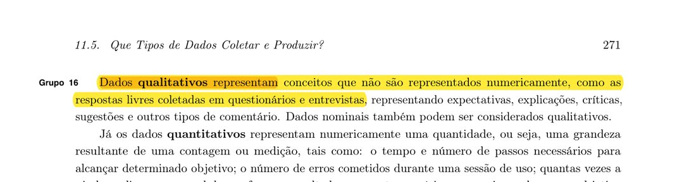
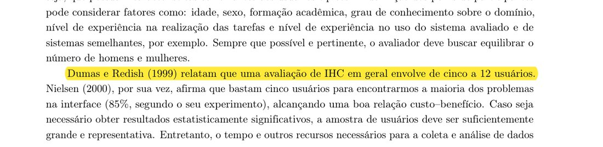
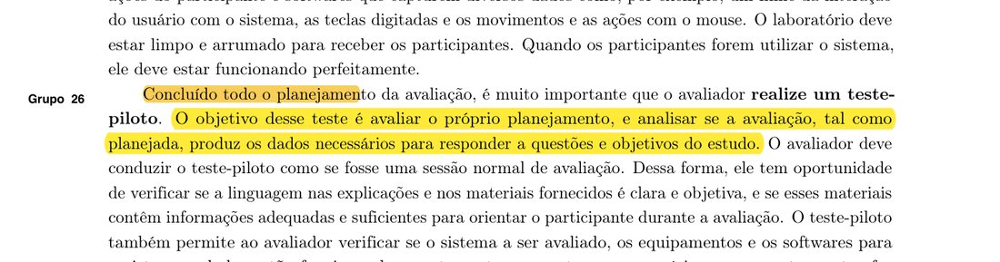
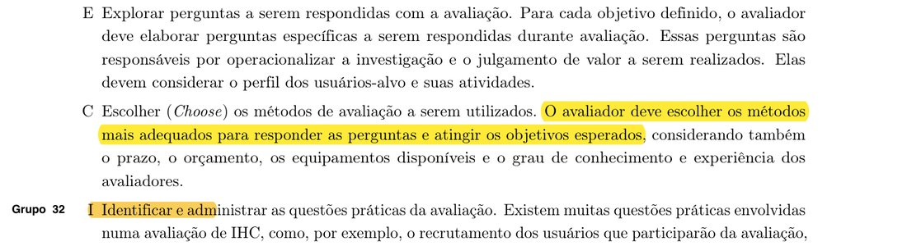
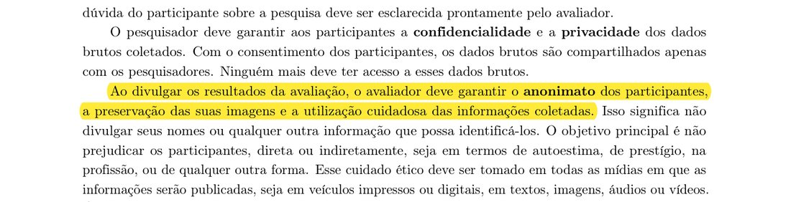

Concordância com o livro, fotos de referência e referências
1. Introdução
Esta página confere o planejamento da avaliação do Grupo 02 contra duas réguas: o livro-texto (Barbosa et al., 2021) e o Plano de Ensino da disciplina. A Tabela 43 mostra, para cada etapa do framework DECIDE e para as questões práticas e éticas, o que o livro orienta (capítulo, seção, página e citação) e em que página deste site o planejamento atende. A Tabela 44 lista as fotos das páginas do livro, com o trecho destacado em amarelo. A Tabela 46 reúne as referências com as páginas usadas. A Tabela 45 confere o planejamento contra os itens da Apresentação 4 do Plano de Ensino.
A coluna “Situação” diz com franqueza o que está atendido, o que é proposta do grupo a validar e o que ainda depende de dados do grupo. A distribuição de autoria dos itens com referência e foto (coluna “Autor do item (proposta)”) é proposta do grupo, a validar. Os métodos e seus modos estão em Métodos, modos e motivos, e a visão geral da etapa está em Entrega 4.
2. Concordância com o livro-texto
A Tabela 43 segue a ordem do DECIDE (objetivos, perguntas, métodos, questões práticas, questões éticas, avaliar e apresentar) e termina com o framework como um todo. As citações são trechos literais, e a fonte de cada uma é o capítulo, a seção e a página indicados na mesma célula. As questões práticas seguem a seção 11.7.2 do livro (participantes, número, material de apoio, tempo, piloto e agendamento). As questões éticas seguem a seção 11.8 e o capítulo 7, seção 7.4.
| Tema | Orientação do livro (capítulo, seção, página, citação) | Onde o planejamento do Grupo 02 atende | Situação |
|---|---|---|---|
| Objetivos (D, DECIDE) | Cap. 11, seção 11.8, p. 280: “O avaliador deve determinar os objetivos gerais da avaliação e identificar por que e para quem tais objetivos são importantes.” | Etapa D do planejamento do storyboard e da análise de tarefas, que dizem o objetivo e a quem ele importa (equipe de design e alunos). | Atendido |
| Perguntas (E, DECIDE) | Cap. 11, seção 11.8, p. 280: “Para cada objetivo definido, o avaliador deve elaborar perguntas específicas a serem respondidas durante avaliação.” Cap. 11, seção 11.2, p. 265: os objetivos “precisam ser detalhados em perguntas mais específicas para torná-los operacionais”. | Cinco perguntas por artefato na etapa E do storyboard e da análise de tarefas, desenvolvidas em Perguntas da avaliação. | Atendido |
| Métodos (C, DECIDE) | Cap. 11, seção 11.8, p. 280: “O avaliador deve escolher os métodos mais adequados para responder as perguntas e atingir os objetivos esperados”, considerando prazo, orçamento, equipamentos e experiência dos avaliadores. | Métodos, modos e motivos: método, modo e motivo de cada escolha, com o método descartado e a razão. Foto na Figura 1 (p. 272) e Figura 7 (p. 280). | Atendido |
| Questões práticas: perfil dos participantes (I, seção 11.7.2) | Cap. 11, seção 11.7.2, p. 274: “Os avaliadores devem buscar participantes que representem o público-alvo do sistema avaliado, ou seja, que possuam características semelhantes aos usuários típicos.” | Etapa I do storyboard (alunos da UnB, calouros e veteranos, alguns que já tiveram dificuldade com faltas) e da análise de tarefas (alunos diferentes dos do storyboard). Detalhes em Logística das sessões. | Atendido |
| Questões práticas: número de participantes (I, seção 11.7.2) | Cap. 11, seção 11.7.2, p. 274: “Dumas e Redish (1999) relatam que uma avaliação de IHC em geral envolve de cinco a 12 usuários.” Na mesma página: “bastam cinco usuários para encontrarmos a maioria dos problemas na interface (85%, segundo o seu experimento)” (Nielsen, 2000). Na p. 275: a avaliação “com frequência pretende apenas obter indícios sobre a qualidade de uso do sistema”. Foto na Figura 5. | Cerca de 5 alunos para o storyboard e 3 a 5 para a HTA e a CTT (etapa I dos dois planejamentos). A razão da quantidade é o prazo curto e o objetivo de obter indícios para o reprojeto, e não resultados estatísticos. Os 3 a 5 da análise de tarefas ficam abaixo da faixa de cinco a 12, e o relato registra isso como limitação. | Atendido, com limitação registrada |
| Questões práticas: material de apoio (I, seção 11.7.2) | Cap. 11, seção 11.7.2, p. 275: “Antes de começar a coletar dados, o avaliador deve preparar e imprimir o material de apoio necessário.” A lista inclui o “termo de consentimento livre e esclarecido (TCLE), de acordo com os cuidados éticos necessários”. | Etapa I dos dois planejamentos (storyboard impresso ou em tela, roteiro, TCLE, gravador; HTA e CTT, lista de verificação, planilha de discrepâncias). Uso de cada item em Métodos, seção 4. | Atendido |
| Questões práticas: tempo (I, seção 11.7.2) | Cap. 11, seção 11.7.2, p. 275: “O tempo estimado para um participante realizar cada tarefa não deveria ultrapassar 20 minutos.” | Sessões de 15 a 20 minutos (etapa I do storyboard), com blocos de tempo em Métodos, seção 4 (proposta do grupo, a validar no piloto). | Atendido; blocos a validar |
| Questões práticas: teste-piloto (I, seção 11.7.2) | Cap. 11, seção 11.7.2, p. 276: “O objetivo desse teste é avaliar o próprio planejamento, e analisar se a avaliação, tal como planejada, produz os dados necessários para responder a questões e objetivos do estudo.” Foto na Figura 6. | Teste-piloto: objetivo, roteiro e ficha de calibração. O cronograma prevê um piloto de uma sessão entre 14 e 16/10, antes das sessões de 16 a 21/10. | Atendido |
| Questões práticas: dados do piloto (I, seção 11.7.2) | Cap. 11, seção 11.7.2, p. 276: “Os dados do teste-piloto devem ser descartados, pois podem estar contaminados por problemas que ocorreram durante o piloto”. | Os dados do piloto não entram nos resultados: Teste-piloto e Relato dos resultados. | Atendido |
| Questões práticas: agendamento (I, seção 11.7.2) | Cap. 11, seção 11.7.2, p. 276: “Confirmada a disponibilidade e o interesse do participante, o avaliador deve agendar com ele a data, o horário e o local para a realização da avaliação.” | Logística das sessões e Cronograma planejado: janela de 16 a 21/10, com data, horário e local ou plataforma por sessão a registrar quando houver confirmação. | Atendido em outra página (conferir) |
| Questões práticas: recrutamento (I, seção 11.7.2) | Cap. 11, seção 11.7.2, p. 276: “Sempre que possível, o avaliador deve evitar selecionar seus conhecidos, amigos, alunos, subordinados ou pessoas com as quais possua alguma relação próxima”. | O recrutamento é feito entre alunos da UnB (Logística das sessões). Proposta do grupo, a validar: priorizar alunos sem relação próxima com o integrante que conduz a sessão e registrar essa relação no relato. | Proposta a validar |
| Questões éticas: visão geral (D, DECIDE) | Cap. 11, seção 11.8, p. 280: “Sempre que usuários são envolvidos numa avaliação, o avaliador deve tomar os cuidados éticos necessários (veja Seção 7.4).” | Etapa D de storyboard e análise de tarefas, desenvolvida em Questões éticas. | Atendido |
| Questões éticas: consentimento | Cap. 7, seção 7.4, p. 141: “A participação na pesquisa deve ocorrer apenas com o consentimento livre e esclarecido dos participantes.” | TCLE em todas as sessões (Questões éticas; uso na sessão em Métodos, seção 4). | Atendido |
| Questões éticas: desistência | Cap. 7, seção 7.4, p. 142: “O participante tem o direito e a liberdade de se recusar a participar ou retirar seu consentimento e abandonar o estudo em qualquer fase da pesquisa, sem ser penalizado por isso.” | Direito de desistir a qualquer momento (etapa D dos dois planejamentos; Questões éticas). | Atendido |
| Questões éticas: gravação | Cap. 7, seção 7.4, p. 141: “É necessário obter permissão para gravar a voz ou imagem de qualquer pessoa, antes de começar a gravação.” | Gravação somente de áudio e somente com autorização (etapa D dos dois planejamentos; Questões éticas). | Atendido |
| Questões éticas: anonimato | Cap. 7, seção 7.4, p. 141: “Ao divulgar os resultados da avaliação, o avaliador deve garantir o anonimato dos participantes, a preservação das suas imagens e a utilização cuidadosa das informações coletadas.” Foto na Figura 8. | Anonimato dos participantes (etapa D dos dois planejamentos) e relato sem identificação (Relato dos resultados). | Atendido |
| Questões éticas: confidencialidade e guarda dos dados | Cap. 7, seção 7.4, p. 141: “O pesquisador deve garantir aos participantes a confidencialidade e a privacidade dos dados brutos coletados.” Na p. 143: “os dados devem ser mantidos apenas enquanto forem relevantes. Quando não precisarem mais ser utilizados, devem ser descartados.” | Termos guardados fora do repositório público (etapa D dos dois planejamentos). O prazo de guarda e descarte dos áudios é detalhado em Questões éticas. | Atendido em outra página (conferir) |
| Questões éticas: quem é avaliado | Cap. 7, seção 7.4, p. 142: “devemos enfatizar que é o produto que será avaliado, e não o participante.” | Os participantes avaliam os modelos e não são avaliados (etapa D da análise de tarefas); o storyboard usa dados fictícios, e ninguém precisa relatar a própria frequência (etapa D do storyboard). | Atendido |
| Analisar e apresentar (E, DECIDE): análise por participante | Cap. 11, seção 11.7.4, p. 278: “Em geral, o avaliador se concentra inicialmente na interpretação dos dados coletados de cada participante individualmente, buscando respostas às questões específicas definidas no planejamento da avaliação.” | Análise por participante e depois consolidada: Relato do storyboard e Relato da análise de tarefas. | Atendido |
| Analisar e apresentar (E, DECIDE): consolidação (seção 11.7.5) | Cap. 11, seção 11.7.5, p. 279: “Nessa atividade, os avaliadores buscam recorrências nos resultados de acordo com o método selecionado.” E: “Os resultados de uma avaliação de IHC normalmente indicam tendências de problemas, e não uma certeza de que eles vão ocorrer durante o uso do sistema.” | Recorrências separadas de opiniões isoladas e resultados tratados como tendências (etapa E de storyboard e análise de tarefas; Relato dos resultados). | Atendido |
| Analisar e apresentar (E, DECIDE): estrutura do relato (seção 11.7.5) | Cap. 11, seção 11.7.5, p. 279: “Finalmente, os avaliadores devem relatar os resultados consolidados, que costumam incluir:” objetivos e escopo, método, número e perfil de participantes e avaliadores, sumário dos dados, interpretação, lista de problemas e planejamento do reprojeto. | Os itens aparecem na tabela de itens do relato de storyboard e análise de tarefas e nas páginas de relato. | Atendido |
| Analisar e apresentar (E, DECIDE): validades | Cap. 11, seção 11.8, p. 280: “e a validade ecológica do estudo (i.e., o quanto os materiais, métodos e ambiente de estudo se assemelham à situação real investigada).” A seção também trata de confiabilidade, validade interna e validade externa. | Confiabilidade, validades interna, externa e ecológica nas etapas E de storyboard e análise de tarefas; a validade ecológica é registrada como limitação. | Atendido |
| DECIDE como um todo | Cap. 11, seção 11.8, p. 280: “As atividades do framework são interligadas e executadas iterativamente, à medida que o avaliador articula os objetivos da avaliação, os dados e recursos disponíveis.” Foto na Figura 7. | As seis etapas D, E, C, I, D, E estão nos planejamentos de storyboard e análise de tarefas, e a visão geral está em Entrega 4. A iteração entre etapas aparece quando o piloto (Teste-piloto) pode alterar roteiro e tempos. | Atendido |
Fonte: BARBOSA et al. (2021), cap. 7, seção 7.4, p. 141 a 143; cap. 11, seções 11.2, 11.7.2, 11.7.4, 11.7.5 e 11.8, p. 265, 274 a 276, 278 a 280. Planejamento do Grupo 02 nas páginas indicadas.
3. Fotos de referência
Cada foto abaixo é uma imagem da página do livro com o trecho citado destacado em amarelo, precedida pela citação literal que ela mostra. A Tabela 44 resume as oito fotos e indica a que item do planejamento cada uma serve. A coluna de autoria é proposta do grupo, a validar: cada integrante fica com duas fotos, conforme o Plano de Ensino, que pede ao menos um item com referência e foto por integrante.
| Figura | Obra, capítulo, seção, página | Assunto do trecho destacado | Serve a | Autor (proposta) |
|---|---|---|---|---|
| Figura 1 | Barbosa et al. (2021), cap. 11, seção 11.6, p. 272 | Investigação com material de apoio | Métodos (item 4 do Plano) | Matheus do Vale Lameira |
| Figura 2 | Barbosa et al. (2021), cap. 11, seção 11.3, p. 267 | Storyboards como insumo de avaliação formativa | Métodos e método descartado (item 4) | Matheus do Vale Lameira |
| Figura 3 | Barbosa et al. (2021), cap. 11, seção 11.6, p. 273 | Objetivos e perguntas guiam a escolha do método | Objetivos e métodos (itens 3 e 4) | Felipe Lopes Pedroza |
| Figura 4 | Barbosa et al. (2021), cap. 11, seção 11.5, p. 271 | Dados qualitativos | Tipos de dados (Tabela 11 de Métodos) | Tiago Sousa Nepomuceno |
| Figura 5 | Barbosa et al. (2021), cap. 11, seção 11.7.2, p. 274 | Número de participantes | Questões práticas (item 5) | Tiago Sousa Nepomuceno |
| Figura 6 | Barbosa et al. (2021), cap. 11, seção 11.7.2, p. 276 | Objetivo do teste-piloto | Teste-piloto (item 11) | Felipe Lopes Pedroza |
| Figura 7 | Barbosa et al. (2021), cap. 11, seção 11.8, p. 280 | Escolha dos métodos no DECIDE | DECIDE (item 2) | Victor Andreozzi de La Rocque Couto |
| Figura 8 | Barbosa et al. (2021), cap. 7, seção 7.4, p. 141 | Anonimato dos participantes | Questões éticas (item 6) | Victor Andreozzi de La Rocque Couto |
Fonte: BARBOSA et al. (2021), páginas indicadas na tabela; distribuição de autoria elaborada pelo grupo (proposta, a validar).
“o uso de um sistema ou de materiais de apoio, como imagens, cenários e outros tipos de artefatos, pode contribuir para a investigação”
Fonte: BARBOSA et al. (2021), cap. 11, seção 11.6, p. 272.

“Diversos artefatos que representam partes de uma solução de IHC podem servir de insumo para uma avaliação formativa, tais como: cenários de uso, esboços de tela, storyboards”
Fonte: BARBOSA et al. (2021), cap. 11, seção 11.3, p. 267.

“Os objetivos da avaliação, detalhados por questões específicas, são os guias principais para o avaliador escolher os métodos de avaliação a serem utilizados.”
Fonte: BARBOSA et al. (2021), cap. 11, seção 11.6, p. 273.

“Dados qualitativos representam conceitos que não são representados numericamente, como as respostas livres coletadas em questionários e entrevistas”
Fonte: BARBOSA et al. (2021), cap. 11, seção 11.5, p. 271.

“Dumas e Redish (1999) relatam que uma avaliação de IHC em geral envolve de cinco a 12 usuários.”
Fonte: BARBOSA et al. (2021), cap. 11, seção 11.7.2, p. 274.

“O objetivo desse teste é avaliar o próprio planejamento, e analisar se a avaliação, tal como planejada, produz os dados necessários para responder a questões e objetivos do estudo.”
Fonte: BARBOSA et al. (2021), cap. 11, seção 11.7.2, p. 276.

“O avaliador deve escolher os métodos mais adequados para responder as perguntas e atingir os objetivos esperados”
Fonte: BARBOSA et al. (2021), cap. 11, seção 11.8, p. 280.

“Ao divulgar os resultados da avaliação, o avaliador deve garantir o anonimato dos participantes, a preservação das suas imagens e a utilização cuidadosa das informações coletadas.”
Fonte: BARBOSA et al. (2021), cap. 7, seção 7.4, p. 141.

4. Conformidade com o Plano de Ensino
A Tabela 45 confere o planejamento contra os itens da Apresentação 4 do Plano de Ensino (Planejamento da avaliação do storyboard e da análise de tarefas, e do relato dos resultados), e contra os itens gerais de desenvolvimento do projeto que dependem do conteúdo. No texto extraído do Plano, o item 1 é o bloco “Itens do desenvolvimento do projeto: todos os 10 itens” e os itens 2 a 13 são as questões numeradas. A situação reflete o que está planejado nas páginas desta etapa. Os itens atendidos por outras páginas estão marcados para conferência na consolidação do site.
O Plano exige que cada integrante elabore ao menos um item de conteúdo com referência e foto. Os itens 4 e 11 pedem expressamente referência e foto, e o grupo acrescenta foto aos itens 2 e 5, de modo que cada integrante fique com um item (proposta do grupo, a validar). As Figuras 3 e 8 dão apoio extra aos itens 3 e 6.
| Item | O que o Plano pede | Onde é atendido (página do site) | Situação | Autor do item (proposta) |
|---|---|---|---|---|
| Apresentação 4: itens de planejamento e conteúdo | ||||
| 1 | Itens do desenvolvimento do projeto (todos os 10 itens) | Ver as linhas de itens gerais ao fim desta tabela | Parcial: ver itens gerais | Todos |
| 2 | O planejamento da avaliação segue o framework DECIDE? | Storyboard, Análise de tarefas e Tabela 43 desta página (linha “DECIDE como um todo”, Figura 7) | Atendido | Victor Andreozzi de La Rocque Couto |
| 3 | Descreve os objetivos da avaliação (apropriação de tecnologia, alternativas de design, conformidade com padrão e problemas na interação e na interface)? | Etapa D de Storyboard e Análise de tarefas | Atendido | Felipe Lopes Pedroza (Figura 3 como apoio) |
| 4 | Os métodos de avaliação a serem utilizados, com referência bibliográfica e foto do texto que os explica | Métodos, modos e motivos; Figuras 1 e 2 desta página | Atendido | Matheus do Vale Lameira |
| 5 | Questões práticas (recrutamento e perfil, quantidade e razão, presencial ou remota, equipamentos, prazos, orçamento, mão de obra) | Etapa I de Storyboard e Análise de tarefas; Logística das sessões; Tabela 43 (linhas de questões práticas, Figura 5). Orçamento: sem custo. | Atendido | Tiago Sousa Nepomuceno |
| 6 | Questões éticas (participantes respeitados e não prejudicados, durante e depois) | Etapa D de Storyboard e Análise de tarefas; Questões éticas; Tabela 43 (Figura 8) | Atendido | Victor Andreozzi de La Rocque Couto (Figura 8 como apoio) |
| 7 | Estrutura do relatório do resultado da avaliação (objetivos, método, número e perfil de avaliadores e participantes, tarefas executadas, lista de problemas) | Relato do storyboard, Relato da análise de tarefas Relato dos resultados e Planejamento do relato dos resultados. O item cita a prototipação em papel, que é a etapa seguinte; aqui o relato descreve o método efetivamente usado (entrevista e inspeção). | Atendido | Matheus do Vale Lameira |
| 8 | Cronograma com data, horário e local da avaliação do storyboard e da análise de tarefas | Logística das sessões e Cronograma planejado | Atendido | Felipe Lopes Pedroza |
| 9 | Cada desenho do storyboard está relacionado a uma especificação do artefato da análise de tarefas? | Perguntas da avaliação e Storyboard, onde quadros e tarefas são ligados | Atendido | Tiago Sousa Nepomuceno |
| 10 | A quantidade de storyboards é igual à quantidade de integrantes do grupo? | Storyboard e Logística das sessões, que mostram os storyboards por integrante | Atendido | Victor Andreozzi de La Rocque Couto |
| 11 | Definição e data do teste-piloto antes da avaliação, com referência e foto do texto que o explica | Teste-piloto (piloto de uma sessão entre 14 e 16/10); Tabela 43 e Figura 6 desta página | Atendido | Felipe Lopes Pedroza |
| 12 | O resultado do teste-piloto não será apresentado no resultado da avaliação? | Teste-piloto; Tabela 43 (linha “dados do piloto”) | Atendido | Tiago Sousa Nepomuceno |
| 13 | O que o avaliador deve realizar e anotar durante a avaliação (listar os problemas, priorizar a correção dos não resolvidos) | Métodos, seções 4 a 6 (papel do anotador e planilha de discrepâncias) e Relato dos resultados (registro de problemas e reprojeto) e Ficha da sessão e severidade | Atendido | Matheus do Vale Lameira |
| Itens gerais de desenvolvimento que dependem do conteúdo | ||||
| G1 | Histórico de versão padronizado | Histórico de versão ao fim de cada página | Atendido; os revisores ficam a definir pelo grupo | Todos |
| G2 | Autores e revisores de cada artefato | Histórico de versão ao fim de cada página | Atendido em parte: os autores constam; os revisores ficam a definir pelo grupo | Todos |
| G3 | Referências bibliográficas em todos os artefatos | Seção Referências desta página e de Métodos; Tabela 46 | Atendido | Todos |
| G4 | Tabelas e imagens com legenda e fonte, chamadas no texto | Tabelas 1 a 62 e Figuras 1 a 15, todas com legenda, fonte e chamada no texto | Atendido | Todos |
| G5 | Texto de introdução dos artefatos | Seção 1 desta página e de Métodos | Atendido | Todos |
| G6 | Tabela de contribuição no início do artefato, com a contribuição de cada integrante | Tabela de Contribuição | Atendido; a contribuição do Tiago nesta entrega fica a registrar pelo grupo | Todos |
| G7 | Agradecimentos com o uso de Inteligência Artificial generativa | Agradecimentos e uso de IA Generativa | Atendido | Todos |
Fonte: Plano de Ensino, Fundamentos de IHC, 2026/2, turma 01, versão 1, Apresentação 4 (p. 12 e 13 do PDF) e lista de itens gerais de desenvolvimento do projeto; autoria dos itens elaborada pelo grupo (proposta, a validar).
Referências
A Tabela 46 lista as obras usadas nesta página e em Métodos, modos e motivos, com as páginas consultadas e a finalidade de cada uma.
| Obra | Capítulo e seções | Páginas usadas | Para quê |
|---|---|---|---|
| Barbosa et al. (2021) | Cap. 11, Planejamento da Avaliação de IHC: seções 11.1 a 11.8 | 263, 265, 267, 269 a 280 | Tipos de dados, tipos de método, participantes, número, material, tempo, piloto, agendamento, consolidação e DECIDE |
| Barbosa et al. (2021) | Cap. 12, Métodos de Avaliação de IHC: seções 12.1.1, 12.2.1 e 12.2.4 | 283, 301, 320, 321 | Inspeção por avaliadores independentes, teste de usabilidade e comparação de métodos |
| Barbosa et al. (2021) | Cap. 7, Análise e Definição dos Requisitos: seções 7.4 e 7.5.1 | 141 a 146 | Aspectos éticos e entrevista semiestruturada |
| Preece, Rogers e Sharp (2002) | Framework DECIDE, conforme descrito por Barbosa et al. (2021), cap. 11, seção 11.8 | 279 e 280 (em Barbosa et al.) | Estrutura do planejamento da avaliação |
| Plano de Ensino, Fundamentos de IHC, 2026/2, turma 01, v1 | Apresentação 4 e itens gerais de desenvolvimento | p. 12 e 13 do PDF (Apresentação 4) | Régua da disciplina para a conformidade da Tabela 45 |
Fonte: elaboração do grupo, com base nas obras listadas.
- BARBOSA, Simone Diniz Junqueira; SILVA, Bruno Santana da; SILVEIRA, Milene Selbach; GASPARINI, Isabela; DARIN, Ticianne; BARBOSA, Gabriel Diniz Junqueira. Interação Humano-Computador e Experiência do Usuário. 1. ed. Rio de Janeiro, 2021 (versão de 03 de maio de 2021). Capítulo 11, Planejamento da Avaliação de IHC, p. 263, 265, 267, 269 a 280. Capítulo 12, Métodos de Avaliação de IHC, p. 283, 301, 320 e 321. Capítulo 7, Análise e Definição dos Requisitos, p. 141 a 146.
- PREECE, Jennifer; ROGERS, Yvonne; SHARP, Helen. Interaction Design: Beyond Human-Computer Interaction. 2002. Framework DECIDE, citado por Barbosa et al. (2021), cap. 11, seção 11.8, p. 279 e 280.
- UNIVERSIDADE DE BRASÍLIA, Faculdade UnB Gama. Plano de Ensino: Fundamentos de Interação Humano-Computador, 2026/2, turma 01, versão 1. Apresentação 4, p. 12 e 13 do PDF.
Histórico de versão
| Versão | Data | Descrição | Autor(es) | Revisor(es) |
|---|---|---|---|---|
| 1.0 | 12/10/2026 | Publicação da Entrega 4 (planejamento da avaliação do storyboard e da análise de tarefas) a partir do documento do grupo, dividida em artefatos, com nomes e matrículas de Felipe, Matheus e Victor (issue #59) | Felipe Lopes Pedroza, Matheus do Vale Lameira e Victor Andreozzi de La Rocque Couto | A definir (validação pendente) |
| 1.1 | 13/10/2026 | Inclusão da lista de verificação do Storyboard (15 itens, com respostas, textos de origem, fontes e fotos dos trechos), em artefatos por atividade do DECIDE (issue #61) | Matheus do Vale Lameira | A definir (validação pendente) |
| 1.2 | 13/10/2026 | Autoria da lista de verificação do Storyboard (Matheus e Felipe) e inclusão dos vídeos da lista de verificação e da apresentação da Entrega 4 (issue #62) | Matheus do Vale Lameira e Felipe Lopes Pedroza | A definir (validação pendente) |
| 1.3 | 13/10/2026 | Publicação da parte individual de Felipe (Gerenciador de Faltas) com o cronograma até 03/11/2026, dividida em artefatos (issue #63) | Felipe Lopes Pedroza (conteúdo); Matheus do Vale Lameira (publicação) | A definir (validação pendente) |
| 1.4 | 13/10/2026 | Correção da atribuição da parte individual (Gerenciador de Faltas, com cronograma): a entrega do documento é de Victor, Matheus e Felipe, com os três nomes e matrículas no cabeçalho (issue #64) | Victor Andreozzi de La Rocque Couto, Matheus do Vale Lameira e Felipe Lopes Pedroza | A definir (validação pendente) |
| 1.5 | 13/10/2026 | Retirado o rótulo de parte individual do documento do Gerenciador de Faltas (cabeçalho e parágrafo de abertura): o documento é do grupo, feito por Victor, Matheus e Felipe (issue #65) | Victor Andreozzi de La Rocque Couto, Matheus do Vale Lameira e Felipe Lopes Pedroza | A definir (validação pendente) |
| 1.6 | 13/10/2026 | Removido o documento do Gerenciador de Faltas (visão geral, seções 1 a 5 e referências) da Entrega 4 (issue #66) | Victor Andreozzi de La Rocque Couto, Matheus do Vale Lameira e Felipe Lopes Pedroza | A definir (validação pendente) |
| 1.7 | 13/10/2026 | Documento da Entrega 4 substituído pela versão com o cronograma até 03/11/2026 (seções 1 a 5), de Victor, Matheus e Felipe, sem o rótulo de parte individual; itens da lista que citam a Seção 5 ligados ao cronograma (issue #67) | Victor Andreozzi de La Rocque Couto, Matheus do Vale Lameira e Felipe Lopes Pedroza | A definir (validação pendente) |
| 1.8 | 15/10/2026 | Ampliação da Entrega 4 nos moldes do Plano de Ensino: métodos, modos e motivos; perguntas e critérios; questões práticas e éticas; teste-piloto; logística das sessões; estrutura do relato; cronograma planejado e executado; concordância com o livro; tabela de contribuição e agradecimentos (issues #68 a #72) | Victor Andreozzi de La Rocque Couto, Matheus do Vale Lameira e Felipe Lopes Pedroza | A definir (validação pendente) |
| 1.9 | 18/10/2026 | Menu lateral reorganizado em grupos (visão geral, documento do grupo, planejamento ampliado, lista de verificação e planejamentos individuais) e inclusão do planejamento do relato dos resultados do Matheus (issue #75) | Matheus do Vale Lameira | A definir (validação pendente) |
| 1.11 | 18/10/2026 | Removido o planejamento individual da avaliação do Matheus, que fica somente com o planejamento do relato dos resultados; menu, navegação e tabela de contribuição ajustados e fonte das citações corrigida (issues #79 e #80) | Matheus do Vale Lameira | A definir (validação pendente) |
| 1.15 | 18/10/2026 | Planejamentos individuais organizados por integrante no menu e na visão geral; o nome do integrante abre os artefatos dele e sai do título (issue #85) | Matheus do Vale Lameira | A definir (validação pendente) |
| 1.16 | 18/10/2026 | Planejamento do relato do Matheus dividido em cinco artefatos no menu e na visão geral, sob o nome do integrante (issue #86) | Matheus do Vale Lameira | A definir (validação pendente) |